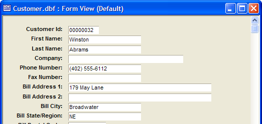

Setting Form Properties
The Form Properties dialog box lets you set these form properties:
|
Property |
Tab |
Description |
|
Backdrop |
The background color of the form. | |
|
Backdrop |
Whether and how to scale the form's background image. | |
|
Backdrop |
The name of the form's background image. | |
|
Page |
The bottom margin when the form is printed. | |
|
Window |
The window's caption. | |
|
Form |
The browse that appears when the user presses F8. | |
|
Data Entry |
Sets the data entry mode of the form to system default, modal, or modeless. Also see Data Entry Modes. | |
|
Filter/Order |
An expression that selects records from the underlying table or set. Also see Saving Order and Filter Criteria in the Form Layout and Effects of Setting Filter and Order Properties. | |
|
Page |
Whether to print only one form per page | |
|
Window |
Sets the style of the window. | |
|
Form |
The height of the form in inches or centimeters. Also see Size and Position Options. | |
|
Help Entry |
The name of the help file. | |
|
Help Entry |
The help topic to display when the user presses F1. | |
|
Form |
The icon that appears on the title bar of the form. | |
|
Page |
The left margin when the form is printed. | |
|
Window |
Whether or not the form has a maximize button. | |
|
Menus/Toolbars |
The menus that appear in different form modes. | |
|
Window |
Whether or not the form has a minimize button. | |
|
Filter/Order |
An expression that orders selected records. | |
|
Window |
The left coordinate of the form relative to the Alpha Anywhere window. | |
|
Window |
The top coordinate of the form relative to the Alpha Anywhere window. | |
|
Printer |
The name of the file when printing to file. | |
|
Printer |
The various settings supported by the selected printer. | |
|
Printer |
Whether to use the default printer or a specific printer. | |
|
Printer |
Whether to display the Printer Setup dialog when the form is printer. | |
|
Form |
The form that appears when you use Query by Form. | |
|
Page |
The right margin when the form is printed. | |
|
Window |
Whether or not the form can be resized by the operator. | |
|
Form |
Whether the Form Status Bar appears | |
|
Window |
Controls whether the user can close, minimize, or maximize the form window. | |
|
Form |
The number of seconds between timer interrupts. | |
|
Menus/Toolbars |
The toolbars that appear in different form modes. | |
|
Page |
The top margin when the form is printed. | |
|
Form |
Restrictions on the operator's ability to use various Alpha Anywhere data entry, query, find, and editing functions. | |
|
Form |
The width of the form in inches or centimeters. |
Refer to Defining Fill Style and Color.
 Note : Specifying a
backdrop image for a form causes the backdrop color to change to white.
Note : Specifying a
backdrop image for a form causes the backdrop color to change to white.
 Note : Alpha Anywhere stores
the absolute path and filename of a backdrop image, which might cause
portability problems. First adding the image to the database's bitmap library will prevent this type
of problem.
Note : Alpha Anywhere stores
the absolute path and filename of a backdrop image, which might cause
portability problems. First adding the image to the database's bitmap library will prevent this type
of problem.
Choose Form > Properties and display the Backdrop tab.
Check Use bitmap.
Select the source of the image by clicking Embedded, File, or Library.
If you selected "Embedded" in step 3:
Click Change embedded bitmap.
Navigate to and select the Windows Bitmap (.BMP) or JPEG (.JPG) image file.
Click Open.
If you selected "File" in step 3:
Click
 .
.Navigate to and select the Windows Bitmap (.BMP) or JPEG (.JPG) image file.
Click Open.
If you selected "File" in step 3:
Click
 to display the
Insert Image dialog box.
to display the
Insert Image dialog box.Select the image and click Insert.
Setting the Bitmap Display Mode
Select one of the display mode options.
"Absolute" - does not stretch the image. This option may cause the image to appear as a different size when printed.
"Stretch" - stretches the image both horizontally and vertically to cover the form's background. This option may distort the image.
"Tile" - tiles the image across the form. This option may cause the image to appear as a different size when printed.
"Best fit" - scales the image to the maximum size that will fit on the form background without clipping the image.
A form can have up to six menus, two each for View (record input and editing), Query by Form, and Find by Form modes. The menus are available under the main Alpha Anywhere menu and when the user right clicks on a form.
Choose Form > Properties and display the Menus/Toolbars tab.
Select your customized menus(s) from the appropriate drop-down list box, and click OK.
Specify "
" to turn off a menu, or specify " " to use the system default menu.
A form can have up to three toolbars, for View (record input and editing), Query by Form, and Find by Form modes.
Choose Form > Properties and display the Menus/Toolbars tab.
Select your customized toolbars(s) from the appropriate drop-down list box, and click OK.
Specify "
" to turn off a toolbar, or specify " " to use the system default toolbar.
Choose Form > Properties and display the Page tab.
Optionally, set the units of measure that you wish to use.
Enter a value in the Left, Top, Right, and Bottom fields.
Check Print one per page if you wish to only print one form per page.
Display the Printer tab.
Enter a filename in the Print to file field or click
to navigate to and select a file.
If you want to select a specific printer for the form, select "Specify Printer" from the top drop-down list in the Printer frame.
Select the specific printer from the middle top drop-down list in the Printer frame.
If you have chosen a specific printer in step 8, you may select a Paper bin option.
Check Saved Properties if you would like to define additional printer properties, then click Properties to view the printer's property dialogs.
If you would like to set printer properties each time you print this form, check Show printer setup on print.
Choose Form > Properties and display the Window tab.
Enter the caption that appears on the form title bar in the Caption field.
Choose Form > Properties and display the Form tab.
Select a browse from the Companion Browse list. If no browse is selected, pressing F8 will display the default browse for the table or set.
Choose Form > Properties and display the Data Entry tab.
Optionally, set a default data entry style.
The options for data entry style are:
System default
Modal - prevents users from making edits, unless specific actions are taken.
Modeless - users can edit any fields or records without taking prior actions.
See also Displaying a Form as a Dialog Box.
Setting the Filter and Order Expressions
You can pre-determine the order and selection of records that appear in a form by saving filter/order criteria in the form layout.
When the form is opened, a query is automatically run based on the filter/order criteria you have saved, and the order and selection of records is determined by the query. You can then filter out other records and change the record ordering by using Query-by-form, Quick Sort, and Quick Filter.
For example, you have a table in which you store the names and addresses of customers. Some of your customers are corporate customers, while some are individual people. Suppose also that you want to have separate Forms for corporations and individuals. You can specify filter/order properties in each form such that only individuals appear in one Form, while only corporations appear in the other.
 Note : The query is
only run when the form window is first opened. If you open a form and
then switch to a browse, the filter/order properties from the form apply
to the browse as well.
Note : The query is
only run when the form window is first opened. If you open a form and
then switch to a browse, the filter/order properties from the form apply
to the browse as well.
You can use Ask Variables in the form's filter, so that you are prompted for parameters when you open the Form.
Choose Form > Properties and display the Filter/Order tab.
If the form is based on a set, select a table.
Enter an expression in the Filter expression field that selects records from the table. Optionally, click
 to display the
Filter Builder
to help you define the expression.
to display the
Filter Builder
to help you define the expression.Enter an expression in the Order expression field that orders selected records. Optionally, click
 to display the
Order Builder to help you define the expression.
to display the
Order Builder to help you define the expression.
See also Effects of Setting Filter and Order Properties.
Setting the Window Frame Style
Choose Form > Properties and display the Window tab.
Make a selection from the Frame Style list. There are three options:
"Normal" - The Normal style is the default style and has a thin raised border around the window.

Normal Style Window Frame
"Dialog" - The Dialog Style looks like a standard Windows dialog box. It has no frame around the window, but has a standard height title bar.
"Tool" - The Tool style is similar to the Dialog style, but its title bar has less height. (Its referred to as a "Tool style because it resembles the style of floating toolbar windows, such as the Drag-and-Drop List in the layout editors.)
Click OK and save the form.
Close the form and reopen it to see the new frame style.
Setting Form Position and Size
The size and position properties you set only affect the way the form appears when it is first opened. Once a form has been opened, the operator may be able to resize by selecting Size from the windows control menu or by using the mouse.
If you want to permanently set the forms size and position:
Choose Form > Properties and display the Window tab.
There are four options for setting the form's size and position. The options are:
Default - When the form is opened, it is cascaded with respect to the last opened window, and its size is the same as the last opened window.
Current
Specific
Relative
To set the form to the default size and position, select "Default" in the Left, Top, Width, and Height fields.
In design mode the forms height and width are determined by the margin lines at the bottom and right edges of the form. To adjust these margin lines, position the cursor on the margin line. When the cursor shape changes to a double-arrow, click and drag the margin line to change the size the form. To set the form to the current size and position:
Optionally, click the Current Size & Position button.
Optionally, select "Use Form Width" and "Use Form Height" from the Width and Height lists.
To set the specific size and position value for the form:
Select "Inches" (or "Centimeters" if your system is configured for metric measurement) in the Top, Left, Height, and Width fields.
In the spin boxes to the right, enter the appropriate values. When setting the position, the top left corner of the window is considered the origin, so setting the Top and Left spin boxes to zero puts the form in the top left corner of the Alpha Anywhere window.
You can set the size and position of a form based on a percentage of the Alpha Anywhere window. For example, by setting the Height to 100 and the Width to 50, the form will fill the Alpha Window from top to bottom, and fill half of the window from left to right. To set a relative size and position value for the form:
Choose "Percentage" from the Position and Size drop-down list boxes.
Use the spin boxes on the right to specify the appropriate percentages.
 Note : To have a form
fill the screen without being maximized, set the Top
and Left Position values to "0".
Set Height and Width
modes to "Percentage" and values to "100".
Note : To have a form
fill the screen without being maximized, set the Top
and Left Position values to "0".
Set Height and Width
modes to "Percentage" and values to "100".
H to 0.
Selecting the Form for Query by Form
Choose Form > Properties and display the Form tab.
Select a browse from the Query Form list. If no form is selected, the current form will be used for defining queries.
Disabling the Form's Window Controls
Disabling the maximize, minimize, and other window controls prevents the user from closing or resizing it. The following procedure disables the functions circled in red.
Choose Form > Properties and display the Form tab.
Optionally, clear Sizable, System menu, Minimize button, and Maximize button.
Display the Menus/Toolbars tab.
Select "
" under Menus View and Menus View right click. Click OK and save your design changes.
Clear the Maximize button check box.
Clear the Minimize button check box.
Clear the System Menu check box.
If you want to prevent the window from being maximized or minimized by the user when the form is run:
When Alpha Anywhere opens a form in a window, the form window shows an icon at the left edge of the form's title bar. You can define the icon that Alpha Anywhere will display when the form is opened on the Form tab in the Form Properties dialog box.
Choose Form > Properties and display the Form tab.
Check Has Form Icon.
Click Change Form Icon.
Make a selection from the Insert Image dialog box and click OK.
When the user presses F1, you have the option of displaying a help topic from an Alpha Anywhere help file or a compiled help file in the .CHM or .HLP formats.
Choose Form > Properties and display the Help Entry tab.
Check Use Custom Help.
Make a selection from the Help Source File list. The options are:
"Standard Windows Help File (.hlp file)"
"Compiled Windows Help File (.chm file)"
"Alpha Anywhere Help File"
If you selected either "Standard Windows Help File (.hlp file)" or "Compiled Windows Help File (.chm file)", refer to Linking to a External Help File Topic.
If you selected "Alpha Anywhere Help File", refer to Creating Alpha Anywhere Help Text.
Enabling or Disabling the Status Bar
An Alpha Anywhere form has three boxes at its lower left corner. This is the Form Status Bar. The first button shows an icon if you are in "enter record mode". The second icon shows if there is a filter that is active. The third icon shows if the current record is 'marked'.

The Status Bar can show the progress of tasks. To enable or disable the Status Bar.
Choose Form > Properties and display the Form tab.
Check or clear Hide Status Bar.
When creating a form, you can set restriction on what users can do. For example, you can allow users to enter new records, but disallow them from changing existing ones. By restricting command access, you can prevent unauthorized users from damaging data and inexperienced users from becoming confused by unnecessary choices.
Choose Form > Properties and display the Form tab.
Place a check to the left of each restriction you want to enforce. The following table provides a description of the restrictions.
|
Restriction |
Description |
|
Enter Record |
Prevents new record entry. |
|
Change Record |
Records cannot be changed. |
|
Delete Record |
Records cannot be deleted. |
|
Find Commands |
Users cannot access the Find-by-Key command. |
|
Query Commands |
Users cannot access Query commands. |
|
Select Index |
Prevents primary index/query changes. |
|
Select Range |
Users cannot set ranges. |
|
Navigate |
Prevents users from moving to a different record. |
|
Open/Edit Layout |
Prevents users from entering Edit Mode when opening a different layout. |
|
Continuous Enters |
When the user finishes entering a new record, a new record is not automatically created. |
|
Browse Mode |
Users cannot switch to Browse Mode. |
Setting the Timer Interval to a non-zero value allows you to run a script attached to the form's OnTimer event.
Choose Form > Properties and display the Form tab.
Enter a value in seconds in the Timer Interval field. The value may be fractional.
See Also